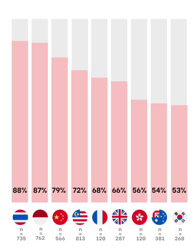
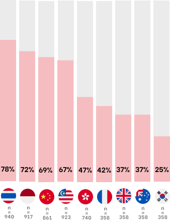
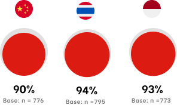
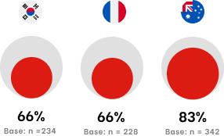

How does the world see us? Mapping international perceptions of a national arts culture
Public sector · Arts & culture · Singapore · 2021–2022
international perceptions of the arts
A national arts and culture authority wanted to expand its international reach — but had no reliable picture of how audiences in target markets actually perceived its arts scene. Assumptions had guided strategy for years. This study identified which markets were genuinely reachable, what drove or blocked engagement, and where to invest limited resources for the greatest return. Findings informed a national arts strategy spanning 2023–2027.
Methodology at a glance
A national arts and culture authority wanted to expand its international reach — but had no reliable picture of how audiences in target markets actually perceived its arts scene. Assumptions had guided strategy for years.
The authority needed evidence: which markets were genuinely reachable, what drove or blocked engagement, and where to invest limited resources for the greatest return.
I led a multidisciplinary team through a two-phase study designed so each phase built directly on the last.
In the first phase, I led 40 qualitative interviews with arts and cultural experts across 11 international markets. The goal wasn't to gather opinions — it was to surface the perception hypotheses that audiences held before encountering the work. These became the architecture for the quantitative instrument.
In the second phase, I designed and ran a quantitative survey of 9,000 respondents across 9 markets, using Bayesian modelling to identify the specific drivers and barriers to likelihood of engagement. Bayesian modelling was chosen over standard regression because we needed to quantify uncertainty in smaller markets while still making cross-market comparisons statistically defensible — standard regression would have either overstated confidence or forced us to pool markets that shouldn't be pooled.
Overall likelihood to consume sat at 38% — higher than the authority expected, but unevenly distributed. Southeast Asian and Chinese audiences showed the strongest engagement potential.
Crucially, prior visitation was a stronger predictor of future engagement than any perception variable — meaning arts tourism and international strategy were not separate levers, but the same one.
The causal network analysis revealed that ease of access and online visibility were more powerful drivers than quality perceptions. Audiences who weren't engaging weren't skeptical about quality. They simply hadn't encountered the work.
The findings directly shaped a multi-year national arts strategy, influencing which international markets received investment priority, how ecosystem development was sequenced, and where digital discoverability efforts were concentrated. Research moved from insight to policy.

Attendance in home country — 9 markets

Attendance outside home country — 9 markets

Satisfaction — highest 3 markets

Satisfaction — remaining markets
Protected content
Full case study available on request. Enter password to unlock.
— Client and agency details
— Market priority rankings and DVF scoring framework
— Full causal network diagram
— Survey instrument and Bayesian model outputs
incorrect password
Client: National Arts Council (NAC), Singapore
Agency: Kantar Public Singapore
Findings informed the Singapore Arts Plan 2.0 (2023–2027).